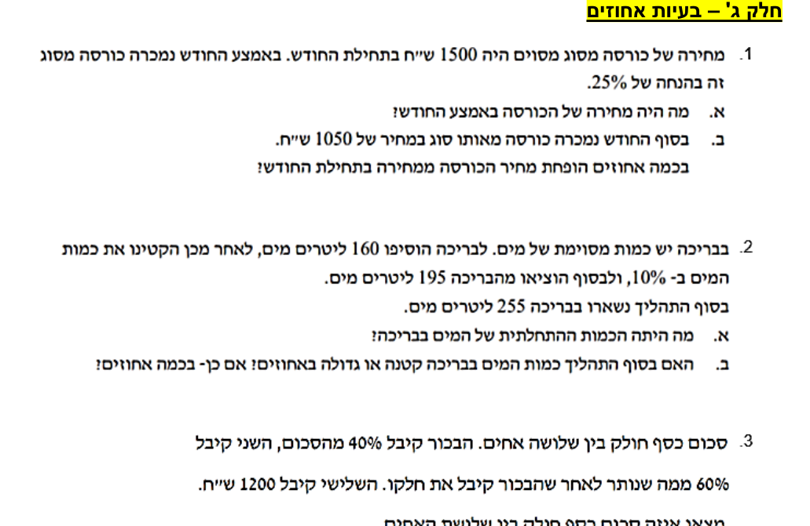
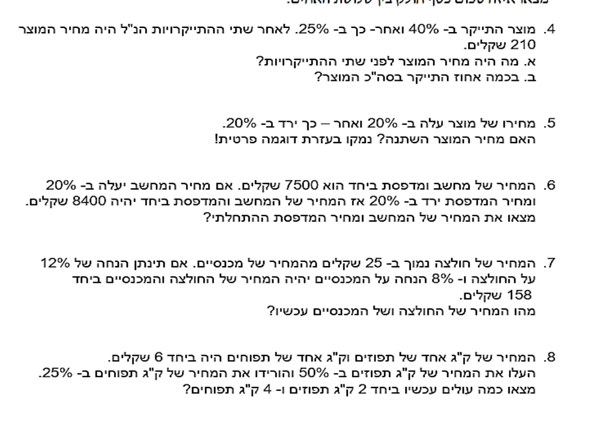

את הבסיס — מהו אחוז, איך שבר הופך לאחוז — פגשת כבר
בתחנה 4 של הסטטיסטיקה;
כאן בונים עליו. בעיות אחוזים במבחן הן כמעט תמיד סיפור על מחיר שמשתנה:
הנחה, התייקרות, ולפעמים שתיהן ברצף. יש לזה כלי אחד שפותר הכל —
מקדם הכפל — ובעמוד הזה נלמד להשתמש בו לכל הכיוונים.
בסוף העמוד תדעי: להפוך כל הנחה או התייקרות למקדם כפל אחד ·
לחשב בכמה אחוזים השתנה מחיר · לטפל בשני שינויים ברצף בלי ליפול במלכודת "זה מתקזז" ·
לחזור מהמחיר שאחרי ההנחה אל המחיר המקורי.
נתחיל מהנחה מוכרת: מעיל עולה 200 ₪, ועליו הנחה של 25%.
הדרך הארוכה שאת מכירה: לחשב כמה זה 25% מ-200, ואז לחסר.
הדרך הקצרה מסתכלת על מה שנשאר לשלם —
אם ירדו 25%, נשארו לשלם:
$$100\%-25\%=75\%=0.75$$
כלומר: הנחה של 25% היא בסך הכל כפל ב-0.75.
צעד אחד במקום שניים:
$$200\times 0.75=150$$
150 ₪ — ובדיקה בדרך הארוכה: 25% מ-200 הם 50, ובאמת
\(200-50=150\) ✓ אותה תשובה בדיוק.
אותו רעיון עובד גם כשהמחיר עולה. התייקרות של 40% פירושה שמשלמים
את כל ה-100% ועוד 40%:
$$100\%+40\%=140\%=1.4$$
המספר האחד הזה — 0.75, 1.4 — נקרא מקדם הכפל,
וזו הנוסחה של כל העמוד:
מחיר חדש = מחיר ישן × מקדם
$$\underbrace{\text{מחיר חדש}}_{\text{אחרי השינוי}}\;=\;\underbrace{\text{מחיר ישן}}_{\text{לפני השינוי}}\;\times\;\underbrace{\textcolor{#EA580C}{\text{מקדם}}}_{\textcolor{#EA580C}{\text{כל השינוי במספר אחד}}}$$
כתום — המקדם: הנחה נותנת מקדם קטן מ-1, התייקרות — גדול מ-1מקדם 1 בדיוק = המחיר לא זז
שווה להכיר כמה מקדמים בעל-פה — שימי לב איך צד ההנחות כולו מתחת ל-1 וצד ההתייקרויות כולו מעל:
השינוי
הנחה 10%
הנחה 25%
הנחה 50%
התייקרות 20%
התייקרות 40%
התייקרות 100%
המקדם
0.9
0.75
0.5
1.2
1.4
2
המקדם חוסך את שני השלבים של "לחשב את האחוז ולחסר" — כפל אחד וגמרנו.
2בכמה אחוזים השתנה המחיר?
עכשיו השאלה ההפוכה: יודעים את שני המחירים — הישן והחדש —
ושואלים בכמה אחוזים המחיר השתנה.
משווים תמיד את ההפרש למחיר שממנו יצאנו:
אחוז השינוי
$$\text{אחוז השינוי}\;=\;\frac{\underbrace{\textcolor{#1D6FA5}{\text{ההפרש בין המחירים}}}_{\textcolor{#1D6FA5}{\text{כמה השתנה בפועל}}}\rule[-1.6em]{0pt}{0pt}}{\underbrace{\textcolor{#8A6D1B}{\text{המחיר המקורי}}}_{\textcolor{#8A6D1B}{\text{המחיר שלפני השינוי}}}}\times 100$$
כחול — ההפרש: מחיר ישן פחות מחיר חדש (או להפך, מה שחיובי) צהוב — המכנה: תמיד המחיר המקורי
ניקח דוגמה אמיתית מדף העבודה שלך: מחירה של כורסה היה 1500 ₪ בתחילת החודש,
ובסוף החודש היא נמכרה ב-1050 ₪. קודם ההפרש:
$$1500-1050=450$$
המחיר ירד ב-450 ₪. עכשיו משווים את הירידה הזו למחיר המקורי:
המחיר הופחת ב-30% — ותכף נפגוש את הכורסה הזו שוב בתרגול.
שימי לב
במכנה עומד תמיד המחיר שלפני השינוי — לא המחיר שאחריו.
מי שמחלקת כאן ב-1050 מקבלת
\(\frac{450}{1050}\approx 42.9\%\) — תשובה שגויה,
למרות שההפרש חושב נכון. השאלה "בכמה אחוזים הופחת" מודדת את השינוי
ביחס לנקודת ההתחלה.
3שני שינויים ברצף — כופלים את שני המקדמים
מה קורה כשמחיר עובר שני שינויים בזה אחר זה — קודם התייקרות ואחר כך הנחה?
כל שינוי הוא כפל במקדם, ולכן שני שינויים ברצף הם פשוט שני כפלים:
מקדם כולל של שני שינויים
$$\text{המקדם הכולל}\;=\;\underbrace{\textcolor{#EA580C}{\text{המקדם הראשון}}}_{\textcolor{#EA580C}{\text{השינוי הראשון}}}\;\times\;\underbrace{\textcolor{#EA580C}{\text{המקדם השני}}}_{\textcolor{#EA580C}{\text{השינוי השני}}}$$
כתום — המקדמים; כופלים אותם, אף פעם לא מחברים את האחוזים עצמם
דוגמה: מוצר התייקר ב-40% ואחר כך הוזל ב-25%, ומחירו בסוף 210 ₪.
מה היה מחירו המקורי? קודם המקדם הכולל:
$$1.4\times 0.75=1.05$$
מקדם כולל 1.05 — כלומר בסך הכל המחיר עלה רק ב-5%.
את המחיר המקורי נסמן ב-\(\textcolor{#2563EB}{x}\),
וכל הסיפור הופך למשוואה מתחנה 2:
המחיר המקורי: 200 ₪. בדיקה קדימה:
\(200\times 1.4=280\),
ואז \(280\times 0.75=210\) ✓ מגיעים בדיוק למחיר הסופי.
ועכשיו המלכודת המפורסמת, ישר מדף העבודה שלך:
מחירו של מוצר עלה ב-20% ואחר כך ירד ב-20%.
האם המחיר חזר לעצמו? נבדוק עם המקדמים:
$$1.2\times 0.8=0.96$$
0.96 קטן מ-1 — המחיר יָרַד ב-4%! הוא לא חוזר למקור.
ככה זה נראה על מחיר לדוגמה של 100 ₪:
הסרטוט זורם מימין לשמאל, כמו הקריאה: מחיר של 100 ₪ עולה ב-20% ל-120,
ואז יורד ב-20% — אבל נוחת על 96.
שימי לב שהעמודה השמאלית, האחרונה, לא מגיעה בחזרה אל הקו המקווקו של ה-100:
חסרות לה בדיוק 4 יחידות.
אחוזים לא מתקזזים
"עלה 20% וירד 20%" זה לא אפס שינוי — כי שני האחוזים נלקחים
ממחירים שונים. העלייה היא 20% מ-100 (כלומר 20 ₪),
אבל הירידה היא 20% מ-120 (כלומר 24 ₪).
דוגמה פרטית אחת מסכמת הכל: \(100\to 120\to 96\).
4מהמחיר שאחרי ההנחה אל המקורי — מחלקים במקדם
עד עכשיו הלכנו קדימה: מהמחיר הישן אל החדש. במבחן אוהבים את הכיוון ההפוך —
נותנים את המחיר שאחרי השינוי ושואלים מה היה קודם.
אין צורך בשום כלל חדש: הנוסחה "מחיר חדש = מחיר ישן × מקדם" היא משוואה,
ומשוואות את כבר פותרת מתחנה 2. למשל: אחרי הנחה של 25% שילמו על כורסה 1125 ₪.
נסמן את המחיר המקורי ב-\(\textcolor{#2563EB}{x}\):
המחיר המקורי היה 1500 ₪ — וזו בדיוק הכורסה מסעיף 2!
שם הלכנו קדימה: \(1500\times 0.75=1125\) ✓
ועכשיו חזרנו אחורה: \(1125:0.75=1500\) ✓
מקדם אחד, שני כיוונים
קדימה (מהישן אל החדש) — כופלים במקדם.
אחורה (מהחדש אל הישן) — מחלקים במקדם.
ועל איזה מחיר מפעילים את האחוז? תמיד על הישן —
ה-25% של ההנחה נלקחו מ-1500.
לכן הדרך חזרה היא חילוק במקדם:
\(1125:0.75=\)1500 ₪.
5תרגול — משלב לשלב
שלב 1 · ביחד
מהדף של בית הספר — תרגיל 1: הכורסה
מחירה של כורסה מסוג מסוים היה 1500 ₪ בתחילת החודש.
באמצע החודש נמכרה כורסה מסוג זה בהנחה של 25%.
א. מה היה מחירה של הכורסה באמצע החודש? ב. בסוף החודש נמכרה כורסה מאותו הסוג במחיר של 1050 ₪.
בכמה אחוזים הופחת מחיר הכורסה ממחירה בתחילת החודש?
נסי לנחש את השלב הבא לפני שאת פותחת אותו.
שלב ראשון — סעיף א: מההנחה אל המקדם
הנחה של 25% משאירה לשלם 75%, כלומר מקדם
\(0.75\). כפל אחד:
$$1500\times 0.75=1125$$
המחיר באמצע החודש: 1125 ₪.
שלב שני — סעיף ב: קודם ההפרש
משווים את סוף החודש לתחילתו:
\(1500-1050=450\) המחיר ירד ב-450 ₪ — ואת הירידה הזו מודדים מול המחיר המקורי, 1500.
שלב שלישי — סעיף ב: אחוז השינוי
מציבים בנוסחה של סעיף 2:
$$\frac{\textcolor{#1D6FA5}{450}}{\textcolor{#8A6D1B}{1500}}\times 100=30$$
המחיר הופחת ב-30%.
המלבן כולו — המחיר בתחילת החודש, 1500 ₪.
החתיכה שירדה — 450 ₪ — היא בדיוק 30% מהשלם.
שלב רביעי — בדיקת היגיון
30% מ-1500 הם 450, ובאמת
\(1500-450=1050\) ✓
בדיוק המחיר של סוף החודש.
שלב 2 · לבד עם רשת
מהמחיר החדש אל המקורי
מחירו של מוצר עלה ב-30%,
ומחירו עכשיו 260 ₪.
מה היה מחירו לפני ההתייקרות?
התשובה שלי (ב-₪):
הצגי פתרון מלא
שלב 1 — מהאחוז אל המקדם: התייקרות של 30% פירושה שמשלמים
את כל ה-100% ועוד 30%:
$$100\%+30\%=130\%=\textcolor{#EA580C}{1.3}$$
שלב 2 — בונים משוואה מהנוסחה של העמוד:
המחיר המקורי הוא הנעלם — נסמן אותו
ב-\(\textcolor{#2563EB}{x}\) — והמחיר החדש (260) ידוע:
בדיקה בדרך הארוכה: 15% מ-80 הם 12, ובאמת
\(80-12=68\) ✓
שלב 3 · כמו במבחן
מהדף של בית הספר — תרגיל 3: שלושת האחים

העמוד הראשון של דף בעיות האחוזים. את תרגיל 1 פתרנו יחד למעלה — עכשיו תרגיל 3.
סכום כסף חולק בין שלושה אחים.
הבכור קיבל 40% מהסכום, השני קיבל 60% ממה שנותר לאחר שהבכור קיבל את חלקו,
והשלישי קיבל 1200 ₪.
איזה סכום כסף חולק בין שלושת האחים?
הצגי פתרון מלא (כמו שכותבים במחברת)
נסמן ב-\(\textcolor{#2563EB}{x}\) את הסכום כולו,
ונתרגם כל אח לביטוי:
הבכור קיבל 40% מהסכום:
\(0.4\textcolor{#2563EB}{x}\).
אחרי הבכור נותר:
\(\textcolor{#2563EB}{x}-0.4\textcolor{#2563EB}{x}=0.6\textcolor{#2563EB}{x}\).
השני קיבל 60% מהנותר — לא מהסכום כולו:
\(0.6\cdot 0.6\textcolor{#2563EB}{x}=0.36\textcolor{#2563EB}{x}\).
חולקו 5000 ₪. בדיקה מלאה:
הבכור \(0.4\times 5000=2000\),
השני \(0.36\times 5000=1800\),
השלישי 1200 —
וביחד \(2000+1800+1200=5000\) ✓
וגם באחוזים: \(40\%+36\%+24\%=100\%\) ✓
הסכום כולו (\(\textcolor{#2563EB}{x}\))
מתחלק בין שלושת האחים: 40% לבכור, 36% לשני — ומה שנשאר, 24%, הוא בדיוק
1200 ₪ של השלישי. מ-24% אחד מגיעים לכל הסכום.
שלב 3 · כמו במבחן
מהדף של בית הספר — תרגיל 6: מחשב ומדפסת

העמוד השני של הדף. את תרגיל 5 — "עלה 20% וירד 20%" — כבר פיצחנו בסעיף 3; עכשיו תרגיל 6.
המחיר של מחשב ומדפסת ביחד הוא 7500 ₪.
אם מחיר המחשב יעלה ב-20% ומחיר המדפסת יירד ב-20%,
המחיר של שניהם ביחד יהיה 8400 ₪.
מצאי את המחיר ההתחלתי של המחשב ושל המדפסת.
הצגי פתרון מלא (כמו שכותבים במחברת)
שלב 1 — מהסיפור אל מערכת: שני נעלמים ושני נתונים —
זו בדיוק מערכת משוואות מתחנה 6!
נסמן את מחיר המחשב ב-\(\textcolor{#2563EB}{x}\).
את מחיר המדפסת נסמן ב-\(\textcolor{#7C3AED}{y}\):
המשוואה הראשונה היא המחירים של היום; השנייה — אחרי השינויים,
כשכל מחיר קיבל את המקדם שלו: עלייה של 20% היא
\(\textcolor{#EA580C}{1.2}\), ירידה של 20% היא
\(\textcolor{#EA580C}{0.8}\).
שלב 2 — מבודדים נעלם מהמשוואה הקלה:
בראשונה שני המקדמים הם 1, אז הבידוד נקי, בלי שברים:
המחיר נחת על 96 ₪ — לא על 100.
ועכשיו ההסבר לחבר:
ה-20% של העלייה נלקחו מ-100 (עלייה של 20 ₪),
אבל ה-20% של הירידה נלקחו מ-120 —
ו-20% מ-120 הם \(0.2\times 120=24\).
ירדו 24 ₪ אבל עלו רק 20 ₪, ולכן המחיר בסוף נמוך ב-4 ₪.
ובשפת המקדמים, בשורה אחת:
\(1.2\times 0.8=0.96\) —
מקדם כולל קטן מ-1, כלומר ירידה של 4%.
אחוזים לא מתקזזים, כי כל אחוז נלקח ממחיר אחר.
(וזה בדיוק תרגיל 5 מהדף של בית הספר.)